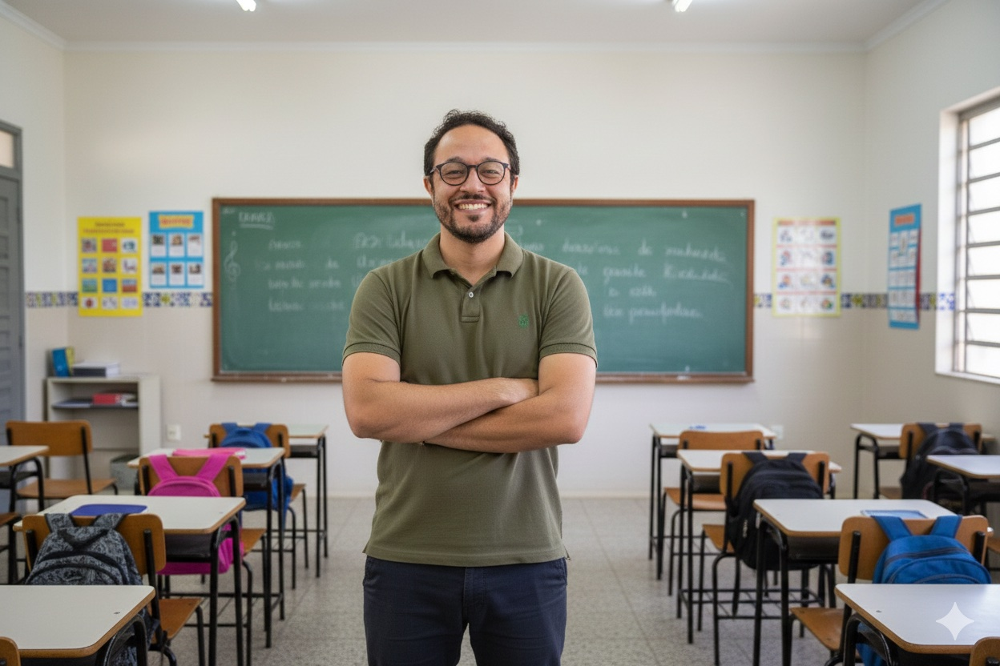

Professor · Pesquisador · Músico
Sou Rafael Rodrigues da Silva — professor do Curso de Música da Unipampa, pesquisador em gestão de sala de aula na educação musical e compositor. Tudo começou quando passei um ano inteiro sem conseguir dar uma aula de música.

Sala de aula · Bagé, RS
Trajetória, formação e o momento que mudou tudo
Sou professor de música há quase vinte anos. Mas a razão pela qual me tornei pesquisador em gestão de sala de aula não veio de um livro — veio de uma falha concreta: passei um ano inteiro sem conseguir dar uma aula de música.
"Em 2010, os problemas de sala de aula eram tantos que a música ficou para depois. Foi quando encontrei a literatura de gestão de sala de aula."
Naquele período, atuei como professor efetivo da SMED Porto Alegre em três escolas com realidades muito distintas — incluindo bairros da Restinga e da Vila Cruzeiro, com tráfico e violência física cotidiana. Cheguei como músico e encontrei um problema que a música sozinha não resolvia.
Essa crise virou objeto de pesquisa. O mestrado em Educação na PUC/RS resultou numa dissertação sobre gestão de sala de aula na educação musical escolar. O doutorado em Música na UFRGS ampliou o olhar para a história dos conservatórios no Brasil. Desde 2016, sou professor do Curso de Música da Universidade Federal do Pampa, em Bagé.
A dimensão musical nunca foi hobby: estudei composição na Musikakademie der Stadt Kassel, na Alemanha, tenho músicas no Spotify e sigo compondo ao lado de Cibele Martinez. A pesquisa e a prática musical coexistem — foi assim que começou.
Trajetória
Artigos sobre gestão de sala de aula, ensino e música
Se você chegou até este texto é porque, provavelmente, já passou pelo tipo de experiência transformadora que é estar na pele de uma pessoa adulta responsável por uma turma inteira.
A lei 15.100/25 sancionada pelo presidente Lula já entra para a história como uma das poucas pautas que conseguiu unir parlamentares de direita e esquerda.
Existe um causo bastante conhecido entre aqueles que acompanham a história do futebol brasileiro que remonta ao terceiro jogo da Copa do Mundo de 1958.
É sabido que os formadores de professores na universidade e os professores na escola costumam ter visões muito diferentes sobre que tipo de ensino funciona.
As perguntas são o combustível do conhecimento humano. Num oceano de informações, saber fazer as perguntas certas na hora certa é uma habilidade docente fundamental.
Era 2009 e, mais uma vez, o fim do ano estava se aproximando. Quem é músico e/ou professor de Música em Porto Alegre sabe que quando chega dezembro a coisa aperta.
Era meu primeiro ano como professor de Arte (ensinando Música) na rede municipal de Porto Alegre. Dezenas de turmas dos anos iniciais do ensino fundamental.
Todos os artigos são publicados originalmente no LinkedIn e no Substack.
Ver todos no LinkedIn →Apresentações sobre gestão de sala de aula e educação musical
Realizo palestras e formações sobre gestão de sala de aula para professores de música e equipes pedagógicas. Entre em contato para verificar disponibilidade.
Entrar em contatoDissertação, tese e publicações em gestão de sala de aula e educação musical
Formação de pós-graduação
Investigação sobre os fundamentos e estratégias de gestão de sala de aula aplicados ao contexto do ensino de música na escola básica pública.
Pesquisa historiográfica sobre a constituição das instituições de ensino musical em Bagé, RS, no início do século XX.
Artigos publicados
Educação & Realidade, v. 41, n. 2, p. 533–554, abr./jun. 2016.
DOI: 10.1590/2175-623646473
Produção acadêmica completa disponível na Plataforma Lattes do CNPq.
Ver currículo Lattes →Uma dimensão que sempre esteve presente
Vim para a sala de aula como músico. Essa não é uma metáfora — é a origem concreta da minha trajetória. Antes de me tornar pesquisador em gestão de sala de aula, estudei composição na Musikakademie der Stadt Kassel, na Alemanha.
A música não é um projeto paralelo ao trabalho acadêmico: ela é parte da mesma história. Componho ao lado de Cibele Martinez e tenho músicas disponíveis no Spotify.
Composições autorais disponíveis para ouvir.
Estudo de composição na Musikakademie der Stadt Kassel, Alemanha (2009). Doutorado em Música pela UFRGS com pesquisa historiográfica sobre os conservatórios de música no período da Primeira República brasileira.
Colaboração musical com Cibele Martinez.
Ouvir no Spotify